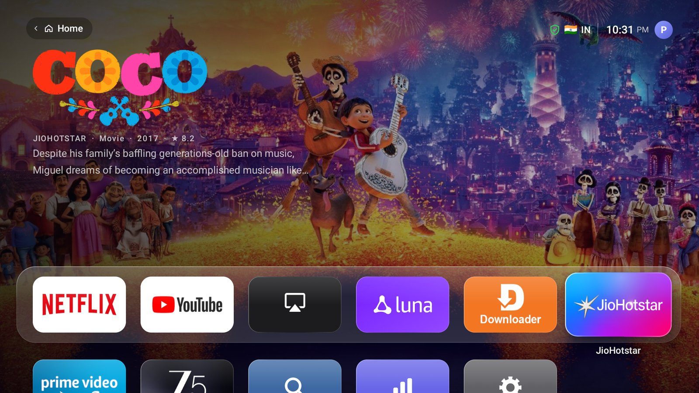
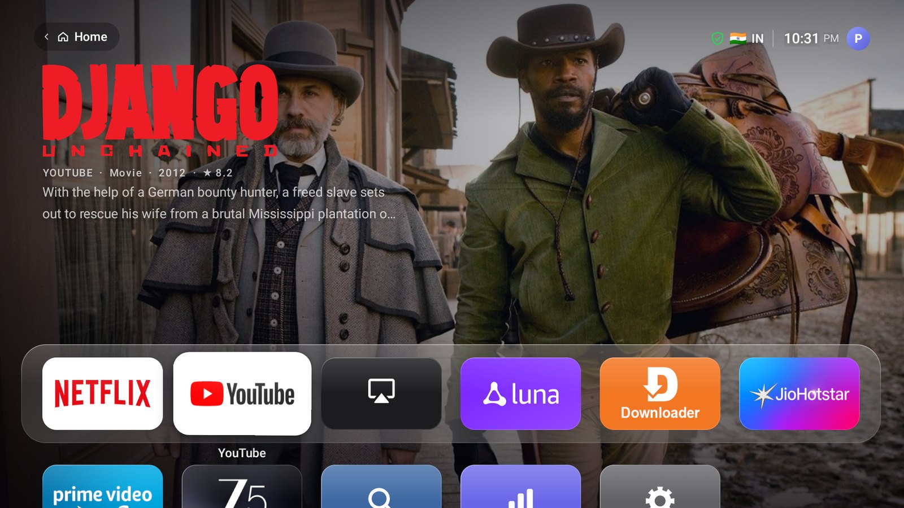
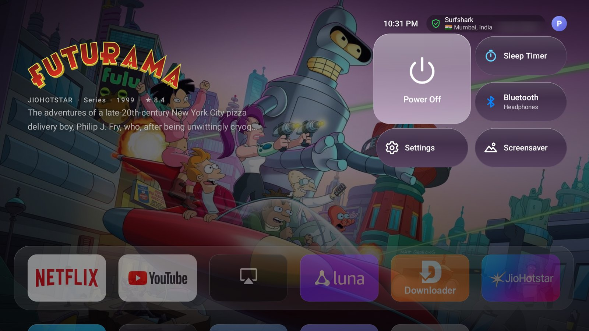
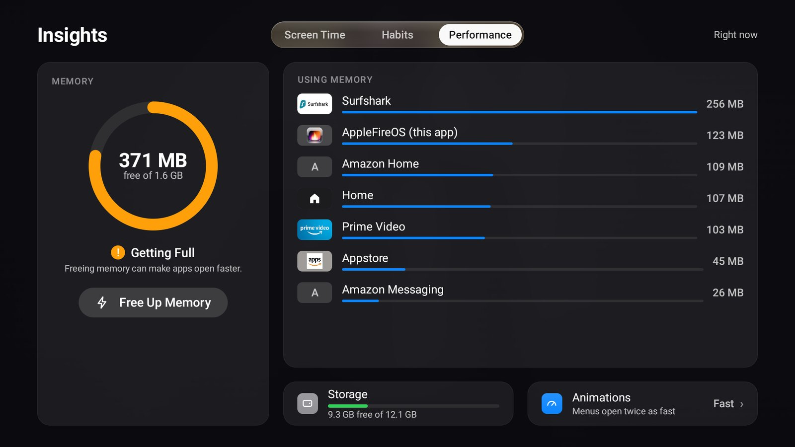
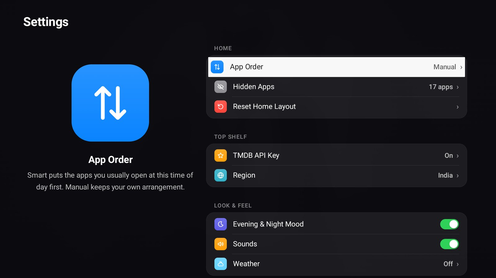

🎬
Top Shelf
Move onto an app and the screen fills with its artwork: what you were watching on Netflix, or what's popular on Prime Video, Disney+ and others. Press Select to play.
A tvOS-style home screen for Amazon Fire TV. A Top Shelf, Control Center, glass panels and spring animations, with no ads, no sponsored rows and no autoplaying trailers.

Every screen is native Android, built from one design language, and tuned to stay smooth on a streaming stick.
Move onto an app and the screen fills with its artwork: what you were watching on Netflix, or what's popular on Prime Video, Disney+ and others. Press Select to play.
Power, sleep timer, Bluetooth, the screensaver, what's playing, and your VPN with the country you appear from.
The tvOS sidebar for Home, Find, Insights and Settings, and a profile switcher that grows from your avatar.
Screen time by app and hour, your viewing habits over the week, live memory use, and one press to close what's slowing the TV down.
Rearrange apps, group them into folders, hide what you never use, or let Smart order put what you usually watch at this time of day first.
A shield beside the clock with the flag of the country your VPN connects through, and an alert if it drops while you're watching.
The temperature next to the time, from Open-Meteo with no account. Colours warm up in the evening and dim late at night.
Apple's aerial flyovers of cities, coastlines and the Earth from space, full screen.
No WebView, no frameworks, no Gradle. About 150 MB of memory and 60 fps, from a 275 KB APK.
Captured on a Fire TV Stick 4K Max.




Fire OS doesn't let you change the home screen from the TV itself, so a computer switches it on, once.
On the TV: Settings › My Fire TV › Developer Options › ADB Debugging.
No Developer Options? Open Settings › My Fire TV › About and press Select on the device name seven times.
Note the TV's IP address from About › Network.
One command, on a computer on the same network:
# macOS brew install android-platform-tools # Debian / Ubuntu sudo apt install adb
With your TV's IP address. Choose Allow when the TV asks.
curl -fsSLO https://raw.githubusercontent.com/pri-te-sh/AppleFireOS/main/setup.sh bash setup.sh 192.168.1.20
Then press Home on the remote.
Want movie and show artwork from more services? Add a free TMDB key: bash setup.sh 192.168.1.20 --tmdb YOUR_KEY, or type it on the TV in Settings › Top Shelf.
Get Downloader from the Amazon Appstore, and allow it under Settings › My Fire TV › Developer Options › Install unknown apps.
In Downloader, type this address and install:
https://github.com/pri-te-sh/AppleFireOS/releases/latest/download/AppleFireOS.apk
It works as an app straight away. To make the remote's Home button open it, run setup.sh once from any computer or adb app; the Setup page in AppleFireOS shows what's left.
Comes back to AppleFireOS from anywhere.
From the top row, into the Top Shelf. Up again opens Control Center.
From the first column, opens the sidebar: Home, Find, Insights, Settings.
Move an app, put it in a folder, hide it or uninstall it.
The same options for the focused app.
In the Top Shelf, plays or resumes the title shown.
Fire OS always starts Amazon's home screen and ignores the default-launcher setting. A tiny accessibility service sees it open and returns you to AppleFireOS in the same moment.
It reads the cards apps already publish for Fire TV's own home screen, like Netflix's continue watching, and adds artwork from TMDB when you give it a key.
Every colour, size, corner and animation curve comes from one theme. A lint runs on every build and fails it if a screen styles itself.
No Gradle and no dependencies: build.sh runs the Android SDK's own tools and builds the APK in seconds.
Run bash setup.sh <tv-ip> --uninstall, or uninstall AppleFireOS on the TV in Settings › Applications. The Home button goes back to Amazon's home straight away.
It's developed and tested on a Fire TV Stick 4K Max (Fire OS 8). It needs Android 7.1 or later, so Fire OS 6 and newer, and is laid out for 1080p and 4K TVs. Tried it on another model? Open an issue to say how it went.
| Accessibility service | Sends the Home button to AppleFireOS. It only watches for Amazon's home screen opening. |
| Notification access | Top Shelf cards from your apps, and your VPN app's status. |
| Usage access | Screen Time and Smart order. |
| DUMP | Memory use and which app owns the VPN. |
| Write secure settings | Insights' faster-animations switch. |
No analytics, no accounts, no tracking. AppleFireOS only contacts TMDB for artwork if you add a key, Open-Meteo for weather if you set a city, a public IP-to-country lookup for the VPN flag, and Apple's servers for the aerial videos. Your layout, screen time and settings stay on the TV.
tools/debloat.sh turns off Amazon background services most people never use (telemetry, Shop, miniTV, Photos, Kids, some Alexa extras). Updates, the Appstore and Alexa voice are left alone, nothing is uninstalled, and restore turns it all back on.
Updates sometimes switch accessibility services off. If Home opens Amazon's screen again, run setup.sh once more; your layout and settings are kept.